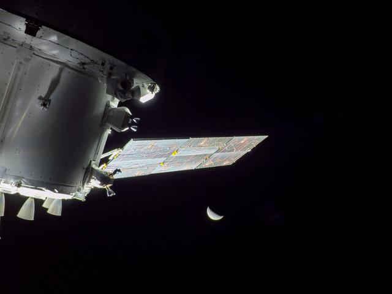
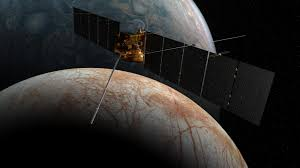
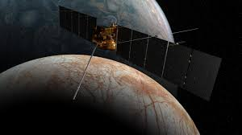

inicio
historia
misiones
tecnologia
Futuras Misiones Espaciales
Las futuras misiones espaciales tienen objetivos ambiciosos, incluyendo exploración humana profunda y estudios científicos detallados.
Misiones destacadas:
- Programa Artemis (NASA): Pretende regresar humanos a la Luna y establecer una presencia permanente.
- Starship (SpaceX): Vehículo diseñado para llevar humanos a Marte y destinos más lejanos.
- Europa Clipper (NASA): Misión destinada a explorar la luna Europa de Júpiter, investigando su océano subsuperficial.
- Tianwen-3 (China): Plan para recoger muestras marcianas y regresarlas a la Tierra.

 
